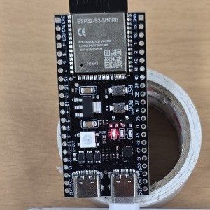

MeshSense
카메라 없이, Wi-Fi 신호만으로 방 안을 읽습니다
ESP32-S3 · Wi-Fi CSI · 실내 상태 인식
01Wi-Fi 전파는 여러 길로 온다

송신
수신
02CSI — 주파수마다 얼마나 세게 왔나
보낼 때
약속된 신호 · 주파수 52개가 모두 같은 세기
주파수 52개 →
방을 지나면
받을 때 = CSI
방과 회로를 지나며 주파수마다 다르게 약해지고 늦어진다
실측 한 장 · 빈 방 · 진폭
주파수 52개 → · Wi-Fi 칩이 통신하려고 원래 재는 값을 ESP32-S3 가 꺼내 준다
03진폭과 위상
진폭 — 얼마나 세게
파도의 높이 · 막히고 흩어지면 작아진다
점선 보낸 신호 · 실선 받은 신호
위상 — 얼마나 밀려서
파도가 닿은 타이밍 · 길이 길어지면 밀린다
점선 보낸 신호 · 실선 받은 신호
위상은 보드마다 시계가 달라 매번 틀어진다 · 실험에서도 진폭이 같거나 나았다 → 실시간 모델은 진폭
04사람이 움직이면 CSI 가 흔들린다
● 사람이 움직일 때
주파수 4개의 진폭 · 6초
실측 · 2026-09-20 수집 · RX 103
06모아서 원본 그대로 저장한다
1초에 100프레임 × 3대tx_seq 로 3대 시각 맞춤Mac 에는 USB 하나만
08두 모델이 동시에 본다
들어오는 CSI 수신 보드 3대 × 1초에 100번
지금 →
최근 15초
최근 3초
0.3초
마다 둘 다 다시 본다
1초에 세 번 넘게
15초 모델방은 어떤 상태인가?
빈 방정지움직임
가만히 있는 사람은 변화가 작아 길게 본다
3초 모델지금 움직이나?
움직임아님
짧게 봐서 빨리 반응한다
09움직임은 먼저, 나머지는 15초로
예
아니오
① 3초 모델
움직임이 확실한가?
90% 이상이 세 번 연속
② 15초 모델
빈 방 · 정지 · 움직임
그중 확률이 가장 높은 쪽
③ 상태 기계
확신 60% 미만은 무시, 이전 상태 유지
움직임 1초, 빈 방·정지 5초 이어져야 바뀐다
빈 방아무도 없어요
정지있고 가만히 있어요
움직임움직이고 있어요
10이 모델로 만들 수 있는 서비스
조명 켜짐
집 안 Mac 이 바로 판단
싱크 보드 LED 를 켜고 끈다
상태 전송
문자
15:02
11월 4일 수요일
메시지지금
[MeshSense] 60분째 움직임 없음 (15:02)
괜찮으면 눌러 주세요
확인이 없으면 등록된 지인에게도 보냅니다
11같은 판단 위에 얹을 수 있는 것들
방 상태
● 빈 방● 정지● 움직임
00왜 카메라 대신 Wi-Fi 인가
카메라
✕얼굴과 모습이 그대로 남는다
✕어두우면 보기 어렵다
✕영상이 유출되면 사생활이 드러난다
Wi-Fi 신호
✓모습 대신 전파 측정값(CSI)만 남는다
✓불을 꺼도 똑같이 잰다
✓몸에 아무것도 차지 않아도 된다
00무엇을 알아내나
⊘
범위 밖
사람 수 · 위치 · 여러 방 동시 감시
00정지는 빈 방과 거의 같다
흔들림 = 6초 동안 진폭의 표준편차 · 9/16·17 세션 15개 × RX 3대 평균
그래프는 그 평균에 가장 가까운 6초 · RX 103 · 주파수 4개
00보드 다섯 대, 역할은 셋
송신 TX × 1
1초에 100번
짧은 신호를 쏜다
주소 끝 00
수신 RX × 3
방 곳곳에서 받을 때마다 CSI 를 잰다
송신 보드 주소에서 온 신호만 기록
주소 끝 = 보드 번호
싱크 × 1
수신 보드의 데이터를
무선으로 모아 USB 로
주소 끝 ff
모두 ESP32-S3 · 채널 11 · ESP-NOW역할마다 주소를 달리해 서로를 잘못 잡지 않는다
00프레임 하나 = 172바이트
Mac 은 이 프레임을 고치지 않고 받은 그대로 .csi 파일에 이어 붙인다 — 계산은 모두 Mac 에서
00학습도 실시간도 무선으로
싱크를 따로 두는 이유 — Mac 의 Wi-Fi 는 ESP-NOW 를 못 받고, 일반 Wi-Fi(UDP)로는 1초에 22번에서 막힌다
00학습 데이터 — 5분짜리 세션
한 묶음 = 세 상태 × 5분
순서는 묶음마다 섞는다 · 날짜·보드 배치를 바꿔 가며
세 상태를 찍는 법
빈 방모두 방 밖으로 나간다
정지정한 자리에 서거나 앉아
숨 쉬는 것 말고는 가만히
움직임방 안을 자유롭게 걷는다
경로는 정하지 않는다
실시간 모델 학습 · 74세션 · 약 6시간
한 상태를 몰아 찍으면 모델이 상태가 아니라 '그 시간대의 신호'를 외운다 → 섞어서 찍는다
00학습에 안 쓴 날로 시험한다
세션 정답 = 5분을 한 덩어리로 맞혔나 · 창 정답 = 15초(3초) 조각마다 맞혔나
실제로 쓰는 15초 모델은 74세션 전부로 다시 학습했다 — 위 숫자는 같은 방식으로 날짜를 갈라 만든 모델의 성적
00얼마나 빨리, 얼마나 맞나
81.7%
화면의 상태가
정답과 같았던 시간
모델 정확도가 아님
바뀐 뒤 확정될 때까지는 이전 상태를
유지하므로, 그 시간도 틀린 것으로 센다
녹화를 이어 붙인 9분 대본 평균
00신호가 끊기면 멈춘다
판단 정지
RX 2/3대 · RX102 끊김
마지막 판단 · 정지 상태 · 15:02
·조명은 그대로 둔다
·클라우드에도 '판단 정지'로 보낸다
·두 대만으로 판단하는 모델은 다음 과제
00조명 규칙
규칙과 시간은 사용자가 설정에서 정한다 — 화면의 값은 예시로 정한 기본값
00알림 세 가지
안부 확인
깨어 있는 시간에 '정지'가 60분 이어지면
① 먼저 본인에게
[MeshSense] 60분째 움직임 없음 (15:02)
괜찮으면 눌러 주세요 ▸ 링크
② 5분 안에 누르지 않으면 지인에게
[MeshSense] ○○님 방: 60분째 움직임 없음.
본인 확인이 없어요. 연락해 주세요
외출 중 움직임
외출 모드를 켠 뒤 움직임이 잡히면
처음엔 바로, 그 뒤엔 30분에 한 통까지
[MeshSense] 외출 중인데 방에서
움직임이 잡혔습니다 (14:02)
집 기기 끊김
집에서 오는 상태가 3분간 없으면
정전·인터넷 끊김도 밖에서 안다
[MeshSense] 집 기기 신호가
3분째 없습니다 (03:12)
안부 확인 시간 · 외출 알림 간격은 사용자가 정한다 (화면 값은 예시) · 지인은 문자 동의 후 등록 · 하루 최대 40통
00다음 단계
조건 다양성이 세션 수를 이긴다 — 같은 조건을 더 찍는 것보다 방·배치·사람을 바꿔 찍는 쪽이 낫다